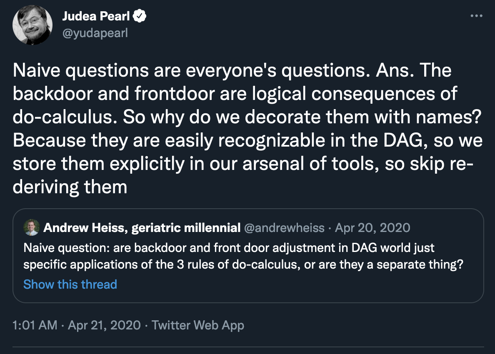
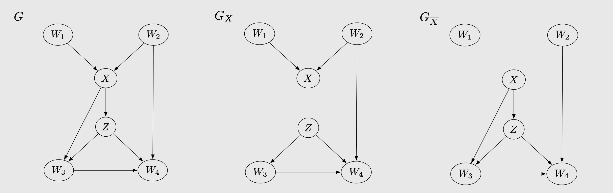
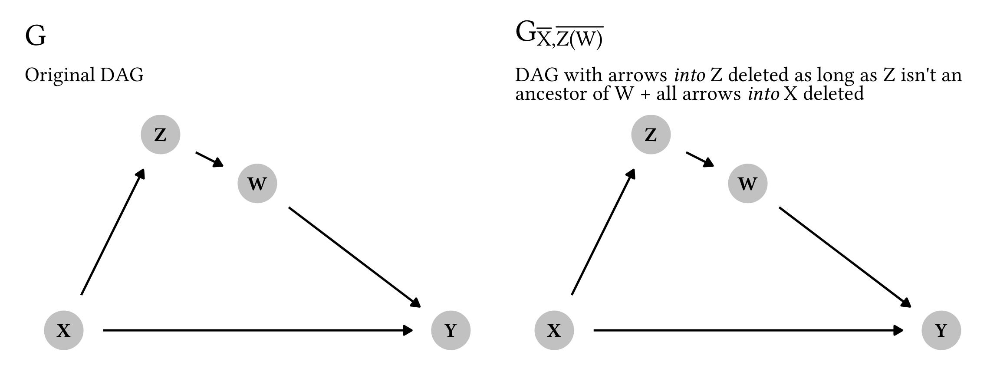
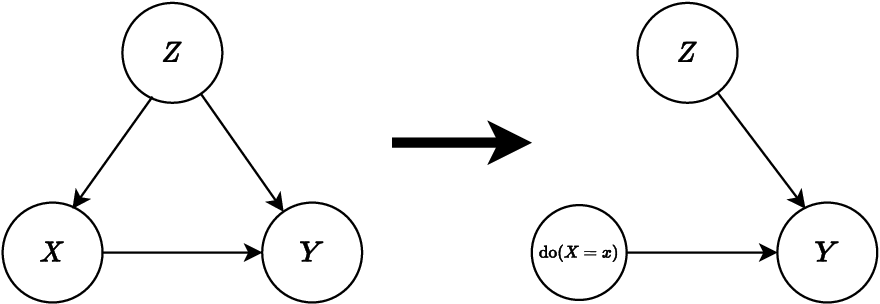
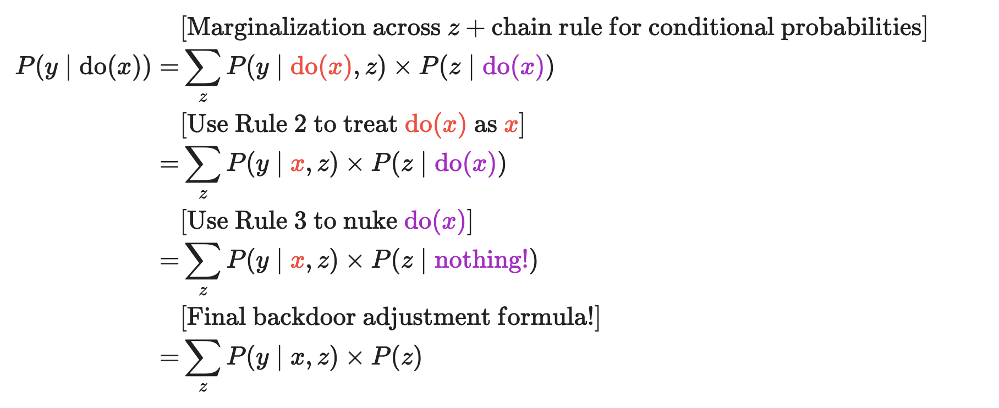

안녕하세요, 가짜연구소 Causal Inference 팀의 남궁민상입니다.
Introduction to Causal Inference 강의의 여섯 번째 챕터이며, 해당 챕터에서 다루는 내용은 아래와 같습니다.
Contents
- \(do\)-calculus
- Determining Identifiability from the Graph
◦ 강의 영상 링크 : Chapter 5 - Randomised Experiments and Identification
Ch 5와 6이 하나의 강의로 합쳐져 있습니다. 위 영상의 전반부는 교과서의 Ch 5, 후반부는 Ch 6 내용입니다. 그래서 여기서부터는 영상 제목과 챕터 제목이 안 맞습니다ㅠ
작성된 내용 중 개선점이나 잘못된 부분이 있다면 댓글로 알려주세요!
\(do\)-calculus
잠깐 지금까지의 내용을 되짚어 볼까요? 우리가 원하는 것은 treatment \(T\)와 outcome \(Y\)의 인과관계, 즉 \(P(y\:|\:do(t))\)를 밝혀내는 것입니다. 이것을 identification이라 하죠.
- 아주아주 간단한 경우, 다른 노드 없이 \(T \rightarrow Y\)라면 statistical quantity가 곧 causal quantity입니다. \(P(y\:|\:do(t))\:=\:P(y\:|\:t)\)입니다.
- 그런데 여러 노드들 사이의 관계가 복잡하게 엮이면, \(P(y\:|\:do(t))\)를 계산하기 위해 더 복잡한 과정이 필요합니다.
- graph factorization을 통해 노드들 사이의 관계를 쭉 늘어놓고
- 우리가 관심없는 것들(\(T\)를 제외한 노드들)은 marginalize하고
- 그리고 \(do(t)\) 항을 없애는 방향으로(observation으로 바꿔나가는 방향으로) 식을 정리한다.
- 이 과정이 지난 시간에 배웠던 adjusting for confounders입니다.
앞서 다룬 backdoor criterion과 frontdoor criterion은 이런 과정이 간단한 케이스입니다. DAG만 쓱 보고도 identify할 수 있는 특수 케이스죠. 그런데 특수 케이스 말고, 일반적인 접근법은 없을까요?
당연히 있습니다! 이 과정에 쓰일 수 있는 3가지의 inference rule이 있는데, 이 일련의 규칙들이 바로 \(do\)-calculus입니다.

쉽게 말하자면, \(do\)-calculus는 일종의 논리적 법칙입니다. 우리가 유클리드 기하학의 5가지 공준을 이용해 피타고라스의 정리를 유도할 수 있는 것처럼, \(do\)-calculus의 3가지 규칙을 이용하면 인과적 관계를 규명할 수 있습니다. frontdoor & backdoor adjustment는 이 법칙들을 적용해서 유도한 공식 중 하나인 거고요.
밑에 자세히 설명하겠지만 \(do\)-calculus의 3가지 룰은 DAG에서 ‘이런 노드들은 무시해도 돼!’ 또는 ‘이런 intervention은 observation으로 취급해도 돼!’ (또는 그 역) 라고 말해줍니다. 쉽게 말해 복잡하게 얽혀있는 상관관계 항들을 쳐내면서 인과관계를 규명할 수 있게 도와주는 거죠.
\(do\)-calculus의 의미를 쉽게 설명하자면…
Rule 1: ~~한 조건이 만족된다면, ~~에 대한 observation을 무시할 수 있다.
Rule 2: ~~한 조건이 만족된다면, ~~에 대한 intervention을 observation으로 간주할 수 있다.
Rule 3: ~~한 조건이 만족된다면, ~~에 대한 intervention을 무시할 수 있다.또는 3개의 규칙 모두…
DAG를 ~~하게 조작했을 때, \(Y\)와 \(Z\)가 d-separated 관계라면 \(Z\)에 대한 항을 무시 or 치환할 수 있다.
\(do\)-calculus를 위한 몇 가지 표기법
\(do\)-calculus를 살펴보기 앞서, 이 챕터에서 자주 쓰이는 노드 이름은 다음과 같습니다.
- \(T\) 또는 \(X\): 조작변인. 우리가 그 영향력을 알아보고자 하는 노드들.
- \(Y\): 종속변인. 쉽게 말하면 결과. 우리가 궁극적으로 원하는 것은 \(P(y\:|\:do(t))\)를 알아내는 것.
또, \(do\)-calculus에서는 causal graph를 이리저리 조작할 필요가 있습니다. 그래서 아래와 같은 표기법을 도입합니다.

Causal graph \(G\)에 대해서,
- \(G\_{\overline{X}}\): 집합 \(X\)에 포함된 노드들의 incoming edge (\(parent(X)\rightarrow X\)인 엣지)를 제거한 그래프
- \(G\_{\underline{X}}\): 집합 \(X\)에 포함된 노드들의 outgoing edge (\(X \rightarrow child(X)\)인 엣지)를 제거한 그래프
처음 보는 표기법이지만, 직관적으로 이해하기는 어렵지 않을 겁니다. 노드 사이의 관계가 폭포처럼 위에서 아래로 흐른다고 생각해봅시다.
- \(G\_{\overline{X}}\): 위를 막는다 → 부모로부터 오는 엣지 차단
- \(G\_{\underline{X}}\): 아래를 막는다 → 자식한테 넘겨주는 엣지 차단
그럼 본격적으로 \(do\)-calculus의 3가지 규칙을 살펴볼까요?
Rule 1: Observation의 삽입 / 제거
\([P(y\:|\:do(t),z,w)=P(y\:|\:do(t),w)\quad if \quad Y {\perp\!\!\!\perp}_{G_{\overline{T}}} Z\:|\:T,W]\)
수학적인 의미를 풀어보자면, 우리가 \(P(y\:|\:do(t))\)를 계산하는 과정에서 \(Z\)에 대한 observation 항이 등장할 수도 있습니다. 그런데 이 때, \(G\_{\overline{T}}\)에서 \((Y {\perp\!\!\!\perp} Z\:|\:T,W)\)가 성립하면 \(Z\)에 대한 observation 항은 무시할 수 있습니다.
조금 직관적으로 풀어보자면, \(Z\)가 \(Y\)에 영향을 줄 수 있는 path가 없다면, \(Z\)에 대한 observation은 무시할 수 있다는 이야기입니다.

예시 하나 살펴볼까요? 위와 같은 그래프를 생각해보자. (여기서는 \(T\) 대신 \(X\)라는 문자를 사용합니다)
\(X\rightarrow Y\)에 대한 인과관계를 밝히고 싶은데, \(Z\)를 신경써야 할까요?
\(do\)-calculus의 1 규칙에 따르면, \(G\_{\overline{X}}\)에서 \(W\),\(X\)를 conditioning 했을 때, \(Z\)와 \(Y\)가 d-separation 되어있는 걸 볼 수 있습니다. 따라서 \(Z\)는 무시해도 됩니다!
직관적으로 봤을 때도, \(Z\)가 바뀌었다고 \(Y\)에 영향을 주는 경로가 없죠? 지금 같은 경우는 그래프가 간단해 바로 보이지만, 그래프가 복잡해지면 유용하게 사용되겠죠?
Rule 2: Action ↔︎ Intervention의 교환
그런데 Rule 1을 아무리 활용해도 식에 do-operator가 있는 걸 없앨 수는 없죠? 그걸 해주는 게 Rule 2입니다!
\([P(y\:|\:do(t),do(z),w)=P(y\:|\:do(t),z,w)\quad if \quad Y {\perp\!\!\!\perp}_{G_{\overline{T},\underline{Z}}} Z\:|\:T,W]\)
수학적으로는, \(G\_{\overline{T},\underline{Z}}\)에서 \((Y {\perp\!\!\!\perp} Z\:|\:T,W)\)가 성립하면 \(Z\)에 대한 intervention은 observation과 같습니다. 즉, \(Z\)에 \(do\)-operator를 마음대로 삽입하거나 제거할 수 있습니다.
직관적으로는, \(Z\)가 \(Y\)에 영향을 줄 수 있는 path가 directed path 밖에 없다면 \(Z\)에 대한 intervention은 observation과 같게 생각할 수 있다는 뜻입니다.

마찬가지로 위와 같은 예시를 생각해봅시다. 여기서 \(do(z)\)를 관측값 \(z\)로 생각할 수 있을까요?
\(G\_{\overline{X},\underline{Z}}\)를 보면 \(W,X\)를 conditioning 했을 때, \(Z\)와 \(Y\)는 서로 영향을 주지 않습니다 (d-separation). 따라서 \(do(z)\)를 그냥 \(z\)로 생각해도 무방합니다.
Rule 3: Action의 삽입 / 제거
규칙 3은 꽤나 복잡하게 생겼습니다.
\([P(y\:|\:do(t),do(z),w)=P(y\:|\:do(t),w)\quad if \quad Y {\perp\!\!\!\perp}_{G_{\overline{T},\overline{Z(W)}}} Z\:|\:T,W ]\)
먼저 \(Z(W)\)가 뭘까요? \(Z(W)\)는 ’\(Z\)에 속한 노드 중에, \(W\)의 부모가 아닌 노드들의 집합’입니다.

위 케이스에서, \(Z\)는 \(W\)의 부모가 아닙니다. 따라서 \(Z(W)\)는 그냥 \(Z\)와 같습니다. (여기서는 \(Z\)가 하나의 노드이지만, \(Z\)가 여러 노드의 집합을 의미하도록 확장될 수 있다는 것, 명심하세요!)
따라서 \(G\_{\overline{X},\overline{Z(W)}}\)는 위와 같이 변경됩니다. \(Z\rightarrow X\)는 \(\overline{X}\)에 의해, \(W\rightarrow Z\)는 \(\overline{Z(W)}\)에 의해 제거되었죠.

반면 이 경우, 하나 있는 \(Z\)가 \(W\)의 부모이므로 \(Z(W)\)는 공집합입니다. 그래서 \(\overline{Z(W)}\)를 한다고 해도 \(X\rightarrow Z\)는 바뀌지 않습니다.
그러면 두 케이스에서 \(do(z)\)는 무시할 수 있을까요? 두 케이스 모두, \(X\)와 \(W\)를 conditioning하면 \(Z\)와 \(Y\)는 d-separated이므로 \(do(z)\)는 무시 가능합니다!
Application
앞서서 frontdoor & backdoor adjustment는 \(do\)-calculus를 통해 유도될 수 있다고 했습니다. 그 과정을 직접 살펴보면서 \(do\)-calculus가 실제로 어떻게 적용될 수 있는지 살펴봅시다.
Backdoor Adjustment


Frontdoor Adjustment

\(do\)-calculus의 특징
\(do\)-calculus는 아래와 같은 특징을 가집니다.
- Complete: \(do\)-calculus의 3가지 규칙을 이용하면 모든 identifiable causal estimand를 identify할 수 있습니다. 다시 말해, 이 세 가지 규칙을 이용해도 identify하지 못하는 케이스는 그냥 identify할 수 없는 케이스입니다.
- Nonparametric: \(do\)-calculus는 데이터 분포에 대해 특별한 가정을 하지 않습니다. 특정 분포를 가정했을 때는 parametric identification이라고 불리며 nonparametric에 비해 더 많은 causal estimand를 알아낼 수 있다고 합니다. 하지만 이 코스에서는 다루지 않는다네요.
Determining Identifiability from the Graph
\(do\)-calculus가 유용하고 좋긴 한데, frontdoor이나 backdoor criterion처럼 그래프만 언뜻 보고도 identifiability를 알아낼 수는 없죠. causal graph를 언뜻 보고도 찾아낼 수 있는, 특수한 causal estimand는 더 없을까요?
있습니다! Unconfounded Children Identifiability라고 불리는 케이스입니다. 아래와 같은 경우죠.
하나의 conditioning set으로 \(T\)의 자손 중에 \(Y\)의 조상인 것들로 통하는 backdoor path를 모두 막을 수 있다면, \(P(y\:|\:do(t))\)는 identifiable하다.
frontdoor adjustment와 비슷해 보입니다. 자세한 예시를 볼까요?

위의 그림에서 frontdoor는 만족하지 않지만 confounded children은 만족한다. Confounded children criterion이 좀 더 일반적인 기준인 셈이죠.
이 외에도 hedge condition이라는 게 있긴 한데, 이 강의에서는 다루지 않습니다.
참고자료
Citation
@online{namgoong2024,
author = {Namgoong, Minsang},
title = {07\textbackslash. {Nonparametric} {Identification}},
date = {2024-01-04},
langid = {en}
}